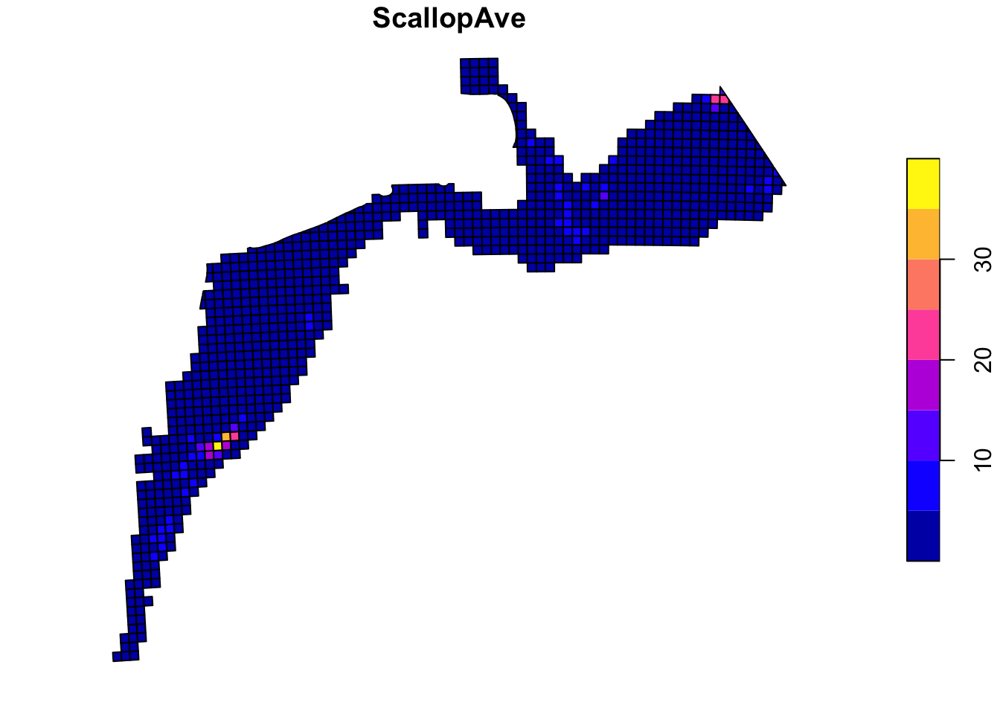

library(ggplot2)
library(dplyr)Week 2 in R
Week 2
R
My activities for the week
Note: I continually refined my code, so some of the older or now-unnecessary code cells below are set to “eval = FALSE” so that the code will still be visible but will not be evaluated and disrupt the output of later cells.
Monday, June 12
All set to eval = FALSE
Load packages
Looking at 22564_UNION_FSCS_SVCAT (one out of five .csv files in the folder shared by Dr. Deyle)
#read data
svcat <- read.csv("~/Downloads/lab_notebook/data/22564_UNION_FSCS_SVCAT.csv")
#view the first six rows of data
head(svcat)
#different overviews of the data
summary(svcat)
glimpse(svcat)#filter to only species of interest - reduces it from 94632 observations to 21425
scallops <- svcat %>%
filter(SCIENTIFIC_NAME=="Placopecten magellanicus (sea scallop)" |
SCIENTIFIC_NAME =="Placopecten magellanicus (sea scallop clapper)")
scallops <- scallops %>%
mutate(name = SCIENTIFIC_NAME,
cruise6 = as.factor(CRUISE6),
cruise = as.factor(CRUISE),
sex = as.factor(CATCHSEX),
stratum = as.factor(STRATUM),
.keep = "unused")
summary(scallops)scallops <- scallops %>%
mutate(name = recode(name, "Placopecten magellanicus (sea scallop)" = "scallop", "Placopecten magellanicus (sea scallop clapper)" = "clapper"))
summarise_all(scallops,n_distinct)
#All have sex = 0, which means "Unsexed, unknown, or sex not observed"
#SVSPP is species, listed as either 401 (scallop) or 400 (clapper), redundant info to species
#Remove unnecessary variables
scallops <- scallops %>%
select(-c("sex", "STATUS_CODE", "SVSPP"))
#ggplot(scallops, aes(x = cruise)) + geom_bar()
#ggplot(scallops, aes(x = cruise6)) + geom_bar()
#ggplot(scallops, aes(x = stratum)) + geom_bar()Tuesday and Wednesday (June 13 and 14)
Load packages
library(tidyverse) #rather than importing separatelySet-up (from June 12)
#read data
svcat <- read.csv("~/Downloads/lab_notebook/data/Old/22564_UNION_FSCS_SVCAT.csv")
#filter to only species of interest - reduces it from 94632 observations to 21425
scallops <- svcat %>%
filter(SCIENTIFIC_NAME=="Placopecten magellanicus (sea scallop)" |
SCIENTIFIC_NAME =="Placopecten magellanicus (sea scallop clapper)")
#turn categorical variables into factors
scallops <- scallops %>%
mutate(name = SCIENTIFIC_NAME,
CRUISE6 = as.factor(CRUISE6),
CRUISE = as.factor(CRUISE),
CATCHSEX = as.factor(CATCHSEX),
STRATUM = as.factor(STRATUM),
.keep = "unused")
#shorten for clarity
scallops <- scallops %>%
mutate(name = recode(name, "Placopecten magellanicus (sea scallop)" = "scallop",
"Placopecten magellanicus (sea scallop clapper)" = "clapper"))
#Remove unnecessary/redundant variables: all entries are listed as unknown sex (sex=0),
# all have the same status code (10), and SVSPP corresponds with name (401 = scallop,
# 400 = clappers)
scallops <- scallops %>%
select(-c("CATCHSEX", "STATUS_CODE", "SVSPP"))I worked on turning the data into an actual time series:
#read the file that has the season and year associated with each cruise
cruises <- read.csv("~/Downloads/lab_notebook/data/Old/22564_SVDBS_CRUISES.csv")
#select the relevant variables
cruises <- cruises %>%
select(c("CRUISE6","SEASON","YEAR")) %>%
mutate(CRUISE6 = as.factor(CRUISE6), .keep="unused")
#combine with the existing dataframe
scallops <- left_join(scallops, cruises, by="CRUISE6")
as_tibble(scallops)Thursday (June 15)
Load packages
library(tidyverse)
library(lubridate)Dr. Deyle sent me some example code for wrangling lobster data from the NEFSC trawl surveys. I adapted the code for use with the scallop dredge surveys:
#read the file that has the metadata associated with each stratum and station
df_strata <- read.csv("~/Downloads/lab_notebook/data/Old/SVDBS_SVMSTRATA.csv")
df_stations <- read.csv("~/Downloads/lab_notebook/data/Old/22564_UNION_FSCS_SVSTA.csv")
#standardizing the date formats
df_stations_wrangled <- df_stations %>%
mutate(DATE = lubridate::parse_date_time(BEGIN_EST_TOWDATE,orders="mdYHMS",truncated = 3)) %>%
select(STATION,STRATUM,DATE) %>% #select relevant columns
mutate(DATE=lubridate::year(DATE)) %>%
distinct() #remove duplicate rowsThen, I wanted to get a general idea of how many times each station and stratum were in the data (i.e., how many years that station or stratum was sampled).
#shows how many occurrences of each station are in the data (i.e. how many years that station was sampled)
data.frame(table(df_stations_wrangled$STATION))
data.frame(table(df_stations_wrangled$STRATUM))This revealed that 20 rows had no station recorded. Additionally, many rows had text of some sort rather than a station or stratum number recorded in the corresponding column (e.g., “took 20-30 meters” and “STARFISH NO STARS”).
I then checked to see how many entries were present for each year:
data.frame(table(df_stations_wrangled$DATE))Importantly, this revealed that the dates for stations only go up to 2006, plus a few observations in 2015 and 2021. At first, I thought that this meant there was only scallop data until 2006, and that this dataset didn’t include the SMAST drop camera and WHOI/HabCam data that has been collected since around 2003 as part of the NEFSC scallop survey. The example code for wrangling lobster data relies on the fact that each lobster observation is associated with a station, so I assumed (incorrectly) that the scallop data would be the same.
Unfortunately, this prompted me to spend much of the afternoon searching for the camera data, until I eventually realized that only having stations until 2006 did not mean there was only scallop data until 2006. Checking the entries per year for the scallop data rather than the stations revealed that there was in fact scallop data from 1977 through 2021.
data.frame(table(scallops$YEAR))However, searching for the camera data was not a complete waste of time. In my search, I had re-pulled the NOAA Scallop Survey data and found that this newer version had data through 2022, whereas the version that Dr. Deyle shared with me only extended to 2021. See the “Week 2 in Words” page for more about what I found in my search for the post-2006 scallop data.
#re-run setup for new data
svcatNew <- read.csv("~/Downloads/lab_notebook/data/22564_UNION_FSCS_SVCAT2022.csv")
scallopsNew <- svcatNew %>%
filter(SCIENTIFIC_NAME=="Placopecten magellanicus (sea scallop)" |
SCIENTIFIC_NAME =="Placopecten magellanicus (sea scallop clapper)")
#turn categorical variables into factors
scallopsNew <- scallopsNew %>%
mutate(name = SCIENTIFIC_NAME,
CRUISE6 = as.factor(CRUISE6),
CRUISE = as.factor(CRUISE),
CATCHSEX = as.factor(CATCHSEX),
# STRATUM = as.factor(STRATUM), <-- this became unnecessary later
.keep = "unused")
#shorten for clarity
scallopsNew <- scallopsNew %>%
mutate(name = recode(name, "Placopecten magellanicus (sea scallop)" = "scallop",
"Placopecten magellanicus (sea scallop clapper)" = "clapper")) %>%
select(-c("CATCHSEX", "STATUS_CODE", "SVSPP"))
#read the file that has the season and year associated with each cruise
cruisesNew <- read.csv("~/Downloads/lab_notebook/data/22564_SVDBS_CRUISES2022.csv")
#select the relevant variables
cruisesNew <- cruisesNew %>%
select(c("CRUISE6","SEASON","YEAR")) %>%
mutate(CRUISE6 = as.factor(CRUISE6), .keep="unused")
#combine with the existing dataframe
scallopsNew <- left_join(scallopsNew, cruisesNew, by="CRUISE6")
as_tibble(scallopsNew)# A tibble: 21,581 × 12
CRUISE6 CRUISE STRATUM TOW STATION ID EXPCA…¹ EXPCA…² CATCH…³ name
<fct> <fct> <chr> <int> <int> <chr> <int> <dbl> <chr> <chr>
1 197703 177 06370 1 1 197703063… 4 0.3 "" scal…
2 197703 177 06370 2 2 197703063… 3 0.1 "" scal…
3 197703 177 06370 3 3 197703063… 2 0.3 "" scal…
4 197703 177 06380 1 4 197703063… 4 0.9 "" scal…
5 197703 177 06370 4 5 197703063… 12 1.7 "" scal…
6 197703 177 06370 5 6 197703063… 22 4.6 "" scal…
7 197703 177 06420 1 8 197703064… 1 0.1 "" scal…
8 197703 177 06500 1 13 197703065… 2 0.3 "" scal…
9 197703 177 06500 2 14 197703065… 7 0 "" clap…
10 197703 177 06500 2 14 197703065… 1897 154. "" scal…
# … with 21,571 more rows, 2 more variables: SEASON <chr>, YEAR <int>, and
# abbreviated variable names ¹EXPCATCHNUM, ²EXPCATCHWT, ³CATCH_COMMENTdata.frame(table(scallopsNew$YEAR)) Var1 Freq
1 1977 346
2 1978 429
3 1979 335
4 1980 425
5 1981 304
6 1982 425
7 1983 568
8 1984 651
9 1985 512
10 1986 471
11 1987 614
12 1988 656
13 1989 503
14 1990 580
15 1991 583
16 1992 490
17 1993 531
18 1994 519
19 1995 548
20 1996 477
21 1997 527
22 1998 606
23 1999 443
24 2000 539
25 2001 675
26 2002 685
27 2003 681
28 2004 828
29 2005 748
30 2006 765
31 2007 805
32 2008 639
33 2009 590
34 2010 680
35 2011 426
36 2012 315
37 2013 247
38 2014 175
39 2015 242
40 2016 191
41 2017 168
42 2018 212
43 2019 163
44 2021 108
45 2022 156I then started to organize the scallop data for analysis:
#this gets rid of some weird strata in 1984 with letters, which don't seem to
# correspond to any of the NOAA (shellfish, dredge, or trawl survey) strata
scallopsTest <- scallopsNew %>%
mutate(STRATUM = as.integer(STRATUM)) %>%
filter(!is.na(STRATUM))
#This will show you which ones were removed
# scallopsTest <- scallopsNew %>%
# mutate(strat = as.integer(STRATUM)) %>%
# filter(is.na(strat))
df_strataNew <- read.csv("~/Downloads/lab_notebook/data/newSVDBS_SVMSTRATA.csv")
#shows how many occurrences of each stratum are in the data (i.e. how many years that stratum was sampled)
data.frame(table(scallopsNew$STRATUM)) Var1 Freq
1 01160 15
2 0116A 5
3 0121A 5
4 01260 9
5 01270 38
6 01370 45
7 0137A 7
8 01380 20
9 03580 1
10 03590 11
11 06010 5
12 06020 9
13 06030 11
14 06040 6
15 06050 7
16 06060 141
17 06070 118
18 06080 8
19 06090 53
20 06100 330
21 06110 493
22 06120 25
23 06130 51
24 06140 570
25 06150 766
26 06160 54
27 06170 71
28 06180 656
29 06190 712
30 06200 19
31 06210 113
32 06220 447
33 06230 1104
34 06240 194
35 06250 215
36 06260 466
37 06270 840
38 06280 178
39 06290 233
40 06300 579
41 06310 1050
42 06320 36
43 06330 267
44 06340 431
45 06350 197
46 06360 1
47 06370 40
48 06380 58
49 06390 14
50 06400 2
51 06410 16
52 06420 5
53 06440 3
54 06450 10
55 06460 247
56 06470 789
57 06480 27
58 06490 396
59 06500 880
60 0650G 16
61 06510 618
62 06520 666
63 06530 530
64 06540 549
65 06550 382
66 06560 15
67 06570 29
68 06580 208
69 06590 442
70 0659F 2
71 06600 437
72 0660F 33
73 06610 488
74 06620 52
75 06621 687
76 06622 133
77 06630 38
78 06631 78
79 06632 118
80 06640 507
81 0664B 6
82 0664D 13
83 0664E 12
84 06650 60
85 06651 476
86 06652 321
87 0665E 4
88 06660 79
89 06661 495
90 06662 220
91 0666A 11
92 06670 10
93 06680 2
94 06700 1
95 06710 521
96 0671C 5
97 06720 96
98 06730 11
99 06740 96
100 06990 15#the key matching strata to location (latitude and longitude) starts from 1010
scallopsNew <- scallopsNew %>%
filter(STRATUM > 1000)Friday (June 16)
Continuing from yesterday:
# Turns out all shellfish strata start with 6, any of the others were not consistently sampled
scallopsNew <- scallopsNew %>%
filter(STRATUM > 5999)
#See how many years each stratum was sampled
scallopsTest <- scallopsNew %>%
group_by(STRATUM) %>%
summarise(years=n_distinct(YEAR))
scallopsTest# A tibble: 0 × 2
# … with 2 variables: STRATUM <chr>, years <int>After learning some GIS basics, I started working with some data sets I found online in hopes of getting the SMAST data, which has time series of scallop abundance alongside the abundance of major scallop predators. (This survey, which is still ongoing.)
library(sf)
# SMAST abundance survey downloaded from
test <- st_read("~/Downloads/lab_notebook/data/SMAST_SCALLOP/SMAST_Scallops.gdb")Reading layer `AveragePresenceAbundance' from data source
`/Users/rubykrasnow/Downloads/lab_notebook/data/SMAST_SCALLOP/SMAST_Scallops.gdb'
using driver `OpenFileGDB'
Simple feature collection with 920 features and 32 fields
Geometry type: MULTIPOLYGON
Dimension: XY
Bounding box: xmin: -75.14375 ymin: 36.39138 xmax: -66.32867 ymax: 42.49109
Geodetic CRS: NAD83class(test)[1] "sf" "data.frame"attr(test, "sf_column")[1] "Shape"print(test[9:15], n = 3)Simple feature collection with 920 features and 7 fields
Geometry type: MULTIPOLYGON
Dimension: XY
Bounding box: xmin: -75.14375 ymin: 36.39138 xmax: -66.32867 ymax: 42.49109
Geodetic CRS: NAD83
First 3 features:
HerCrabAve SandDolAve BryHydAve HolesAve MnSnailAve SpongeAve FlatFishAv
1 0 0 0 0 0
2 0 0 0 0 0
3 0 0 0 0 0
Shape
1 MULTIPOLYGON (((-75.02578 3...
2 MULTIPOLYGON (((-74.91487 3...
3 MULTIPOLYGON (((-74.9217 36...st_geometry(test)Geometry set for 920 features
Geometry type: MULTIPOLYGON
Dimension: XY
Bounding box: xmin: -75.14375 ymin: 36.39138 xmax: -66.32867 ymax: 42.49109
Geodetic CRS: NAD83
First 5 geometries:par(mar = c(0,0,1,0))
plot(test[6])
I also found a version of the NEFSC scallops survey in spatial form and started exploring that dataset:
fish <- st_read("~/Downloads/Fish/Fish.gdb", layer="ScallopBiomass")
st_layers("~/Downloads/Fish/Fish.gdb")
attr(fish, "sf_column")
st_geometry(fish)
class(fish)
par(mar = c(0,0,1,0))
plot(fish[6])